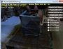

The latest version of this sample is hosted on GitHub.
This is the DirectX SDK's MultithreadedRendering11 sample updated to use Visual Studio 2012 and the Windows SDK 8.0 without any dependencies on legacy DirectX SDK content. This sample is a Win32 desktop DirectX 11.0 application for Windows 8, Windows 7, and Windows Vista Service Pack 2 with the DirectX 11.0 runtime.
This is based on the the legacy DirectX SDK (June 2010) Win32 desktop sample running on Windows Vista, Windows 7, and Windows 8. This is not intended for use with Windows Store apps or Windows RT, although the techniques shown are applicable.

This sample uses the DXUT for Direct3D 11 framework for Win32 desktop applications.
This sample explains how to split rendering among multiple threads, with very low overhead. Direct3D 11 separates out much of the core rendering functionality, which used to reside in the D3D device, into a new interface called the D3D device context. D3D device contexts can be one of two types: immediate or deferred. An immediate context submits commands directly to the device driver, as in traditional rendering. A deferred context batches up commands for inclusion in a command list; the command list can be executed by an immediate context at any time, possibly running on a different thread.
By assigning different fragments of the overall scene to different deferred contexts (running on different CPU cores), titles can realize significant CPU performance gains.
The sample renders a collection of objects into the main scene, into a shadow map, and into multiple mirrors. Five options are presented in the radio buttons to the right of the window:
| UI Name | Full name | # deferred context | # total threads | Notes |
| Immediate | Immediate | 0 | 1 | The frame is rendered sequentially on a single thread, using the immediate D3D device context for everything. |
| ST Def/scene | single-threaded deferred per scene | 1 + #shadows + #mirrors | 1 | The frame is rendered sequentially on a single thread, using multiple D3D device contexts --- one deferred context per shadow map, plus one deferred context per mirror, plus the immediate context for the main scene. The deferred contexts record command lists which are later executed by the immediate context. This path is just an API demonstration, with no performance advantage. |
| MT Def/scene | multi-threaded deferred per scene | 1 + #shadows + #mirrors | 2 + #shadows + #mirrors | The frame is rendered on multiple threads --- one per shadow map, plus one per mirror, plus one for the main scene. The mirror threads all operate in parallel and use deferred contexts to record command lists. As before, the main thread later executes these command lists using the immediate context. This path has a potential performance benefit, but the benefit does not scale past the fixed number of threads. |
| ST Def/chunk | single-threaded deferred per chunk | #cores - 1 | 1 | The frame is rendered on a single thread, using multiple deferred contexts --- one deferred context per available processor on the PC. Within the main scene and each of the mirror scenes, rendering is divided into chunks, and the chunks are farmed out equally among the deferred contexts. This path is just an API demonstration, with no performance advantage. |
| MT Def/chunk | multi-threaded deferred per chunk | #cores - 1 | #cores | The frame is rendered on multiple worker threads --- one per available processor on the PC. The worker threads all operate in parallel and use deferred contexts to record command lists. Within the main scene and each of the subsidiary scenes, rendering is divided into chunks, and the chunks are farmed out equally among the deferred contexts. This path has a potential performance benefit, and the benefit scales with the number of available cores. |
DXUT-based samples typically make use of runtime HLSL compilation. Build-time compilation is recommended for all production Direct3D applications, but for experimentation and samples development runtime HLSL compiliation is preferred. Therefore, the D3DCompile*.DLL must be available in the search path when this program is executed.
%ProgramFiles(x86)%\Windows kits\8.0\Redist\D3D\arm, x86 or x64
%ProgramFiles(x86)%\Windows kits\8.1\Redist\D3D\arm, x86 or x64
The code in this sample can be built using Visual Studio 2010 rather than Visual Studio 2012. The changes required are:
This sample can be modified to build with Visual Studio 2013 using the Windows 8.1 SDK. Set the Platform Toolset to "v120" for all configurations, and obtain the latest DXUT package. Remove the "DXUT_2012.vcxproj" & "DXUTOpt_2012.vcxproj" references, add the projects "DXUT_2013.vcxproj" & "DXUTOpt_2013.vcxproj", and add new References to these projects.
You can also allow VS 2013 to upgrade the projects in place.